ETH 兌換 BANANA
0. 請先至MetaMask官網申請您個人的小狐狸錢包, 再到Maicoin官網註冊後購買ETH, 將ETH傳送至您個人的小狐狸錢包地址 (請選擇ERC20通道傳送)
1. 點選去中心化交易所 Uniswap V3 兌換
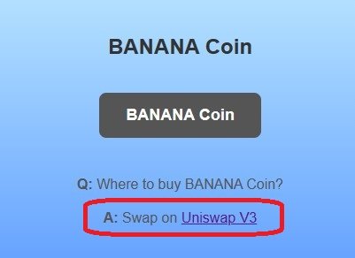
2. 連結小狐狸錢包
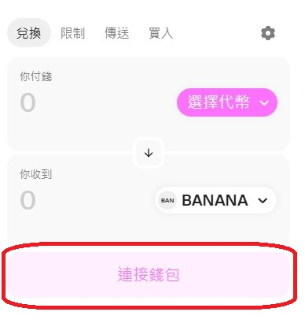
3. 選擇代幣
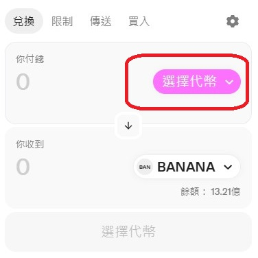
4. 選擇ETH
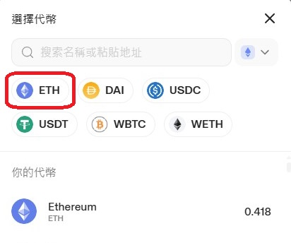
5. 輸入想要用多少的ETH來兌換
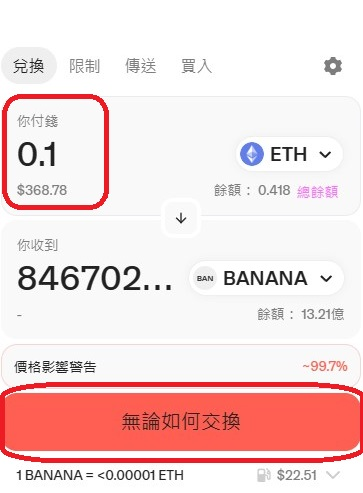
6. 顯示可以兌換到多少個BANANA
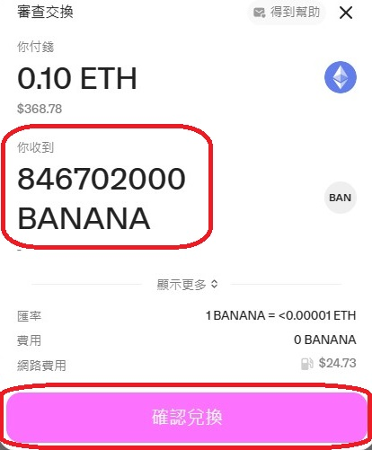
7. 加上Gas交易手續費, 顯示總共需花費多少的ETH來兌換
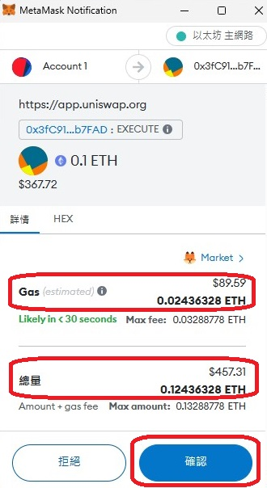
8. 交易完成, 交易紀錄在Etherscan.io區塊鏈
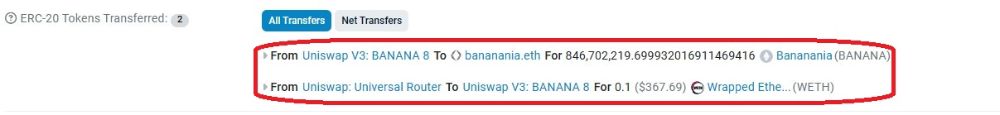
9. 如果小狐狸錢包中找不到BANANA, 請點選Import Tokens, 再點選自訂代幣, 輸入BANANA合約地址 0xC40417C65306dC5fF11A62578EF56f3006124Ab3 後, 匯入BANANA至您的小狐狸錢包
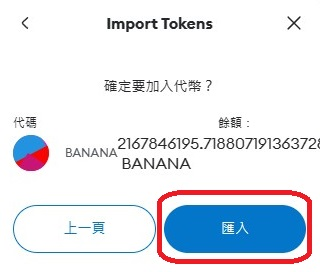
10. 使用小狐狸錢包, 先點選BANANA, 再點選傳送
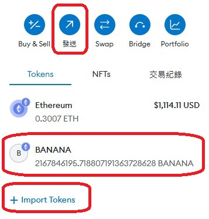
11. 輸入"香蕉GM"的錢包地址 0x681Fb766860effE8f220a846B207dD5F73Fd8319
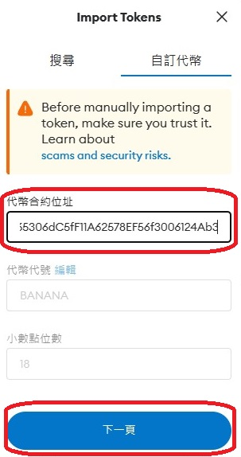
12. 輸入想要傳送多少個BANANA到"香蕉GM"的錢包
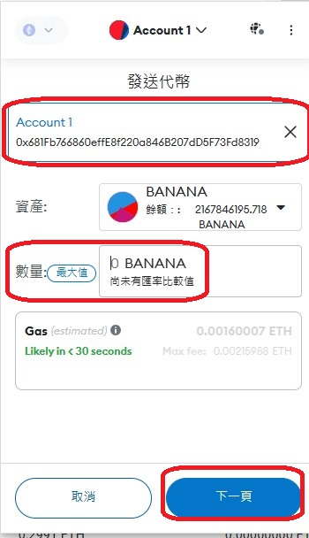
13. 線上通知"香蕉GM"或email: banananiagm@gmail.com 兌換香蕉幣, 經查詢etherscan.io區塊鏈核對後, 將立即發送香蕉幣至您遊戲中"錢包角色ID"身上, 如錢包地址為0x681Fb..., 請新增"錢包角色ID"為681FB(全部大寫)
恭喜您, 您已經學會使用區塊鏈與加密貨幣了!!